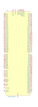

<table>
<tr>
<th>Symbol</th>
<th>Description</th>
</tr>
<tr>
<td><br>ATSAMV71Q19B-A</td><td>Description: SAM V71 Microchip SMART ARM Cortex-M7-based MCU, 512K Flash, 256K SRAM, LQFP-144<br>Keys: 32-bit ARM Cortex-M7 MCU Microcontroller<br>Datasheet: <a href="http://ww1.microchip.com/downloads/en/DeviceDoc/SAM-E70-S70-V70-V71-Family-Data-Sheet-DS60001527D.pdf">http://ww1.microchip.com/downloads/en/DeviceDoc/SAM-E70-S70-V70-V71-Family-Data-Sheet-DS60001527D.pdf</a></td>
</tr>
<tr>
<td><br>ATSAMV71Q20B-A</td><td>Description: SAM V71 Microchip SMART ARM Cortex-M7-based MCU, 1024K Flash, 384K SRAM, LQFP-144<br>Keys: 32-bit ARM Cortex-M7 MCU Microcontroller<br>Datasheet: <a href="http://ww1.microchip.com/downloads/en/DeviceDoc/SAM-E70-S70-V70-V71-Family-Data-Sheet-DS60001527D.pdf">http://ww1.microchip.com/downloads/en/DeviceDoc/SAM-E70-S70-V70-V71-Family-Data-Sheet-DS60001527D.pdf</a></td>
</tr>
<tr>
<td><br>ATSAMV71Q21B-A</td><td>Description: SAM V71 Microchip SMART ARM Cortex-M7-based MCU, 2048K Flash, 384K SRAM, LQFP-144<br>Keys: 32-bit ARM Cortex-M7 MCU Microcontroller<br>Datasheet: <a href="http://ww1.microchip.com/downloads/en/DeviceDoc/SAM-E70-S70-V70-V71-Family-Data-Sheet-DS60001527D.pdf">http://ww1.microchip.com/downloads/en/DeviceDoc/SAM-E70-S70-V70-V71-Family-Data-Sheet-DS60001527D.pdf</a></td>
</tr>
</table>
